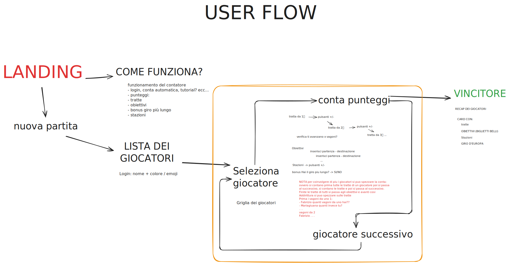
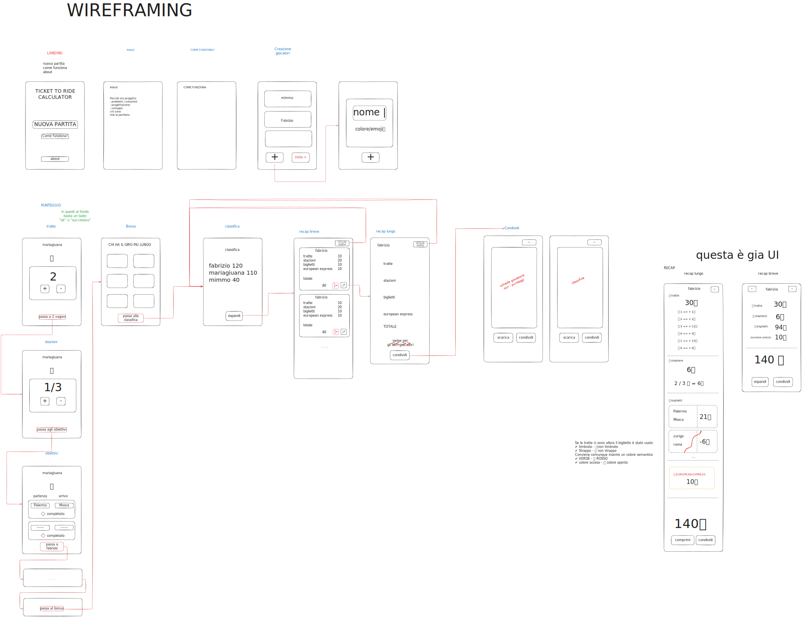
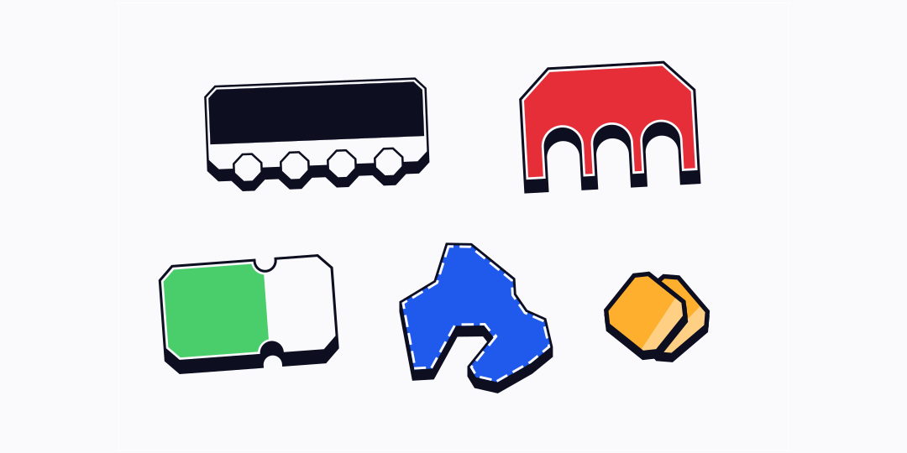

Questa pagina è una sorta di calcolatrice / segnapunti per il gioco da tavolo Ticket to Ride: Europe, che permette ai giocatori di calcolare il punteggio a fine partita in modo semplice e veloce.
L'intero progetto è realizzato con il framework Vuejs 🎉
Il conteggio dei punti in Ticket to Ride avviene alla fine della partita, quando, nella maggior parte dei casi, si è già esauriti. La conta non è così rapida: richiede diverse operazioni matematiche poco entusiasmanti. In breve si contano i punteggi di ogni tratta, a questi si sommano i punti delle stazioni, degli obiettivi e i 10 punti bonus a chi ha composto la tratta più lunga. Inevitabilmente si finisce per utilizzare un foglio A4 e una calcolatrice.
Mentre si conta il numero di tratte potrebbe essere utile avere uno strumento con i pulsanti ➕ ➖ che in automatico restituisce il punteggio. Questo sia per ogni tratta e per il numero delle stazioni. Verificando in automatico se i conti non tornano (in tutto ci sono 45 vagoni per giocatore, e anche le tratte sono "finite": ad esempio le linee con 1 vagone sono solo 4).
Per i punteggi dei ticket invece, una possibile soluzione è quella di inserire i nomi delle due città e spuntare la casella se la tratta è stata "completata".
Nelle prime versioni di questo progetto, i biglietti erano calcolati attraverso dei pulsanti anonimi che riportavano i punteggi standard dei ticket (5, 6, 8, 9, 10, 12, 15, 21). Questa era una delle soluzioni più immediate. Tuttavia, usando questi pulsanti non si aveva un riscontro della lista dei biglietti, utile per evitare di commettere errori.
Per l'assegnazione del bonus invece sarà compito dei giocatori contare sul tabellone qual è la linea più lunga e sezionare sull'app il giocatore corrispondente. Questa fase è molto apprezzata dai giocatori e sostituirla con algoritmo porterebbe solamente svantaggi.
Lo userflow è relativamente semplice. ll giocatore che arriva sulla pagina si soffermerà nel capire il funzionamento (forse) e poi avvierà una partita. Da qui dovrà inserire i nomi dei giocatori per procedere con la conta. Questa è di fatto un loop in cui si seleziona il giocatore, si setta il punteggio di vagoni o stazioni... e poi si passa al giocatore successivo. Alla fine si passa alla pagina della classifica.

In questa bozza per il wireframing si definiscono in modo grezzo come saranno divise le sezioni e come saranno connesse tra loro. Ad esempio per rendere la conta più coinvolgente si è pensato di lasciare liberi gli utenti di seguire l'ordine che preferiscono: contare prima tutti i punti di un giocatore e poi passare al successivo oppure contare prima i punti solo delle linee e poi passare al successivo, poi le stazioni e cosi via. In questo modo non c'è un ultimo giocatore che deve aspettare il suo turno.
Il Bonus è "fuori" dal loop della conta, perché non è necessario che si ripeta per ogni giocatore.

Lo stile di Ticket to Ride: Europe si rifà ad una ambientazione ottocentesca, contiene moltissime illustrazioni ricche di dettagli, così come i testi, carichi di ghirigori. Si è definito uno stile che richiami l'ambientazione della rivoluzione industriale, dei treni e dei biglietti, ma mantenendo un aspetto più moderno e colorato.
Per i font si è scelto Lora per il corpo del testo che in qualche modo ricorda i caratteri utilizzati per i biglietti ferroviari e Limelight per i titoli che invece riporta subito ad una ambientazione molto retrò.
Per gli elementi della UI (pulsanti, input, checkbox...) si è preso come riferimento un rettangolo con i bordi e con gli angoli smussati a 45 gradi che ricordano la forma di un biglietto 👉🏻🎟️. È stato aggiunto un bordo inferiore molto spesso simulando un'ombreggiatura, utilizzata anche per il feedback del pulsante premuto.
Per gli input e le card si è utilizzato invece un rettangolo con al fondo un pattern tipo "zigrinatura", mentre l'input del nome dei giocatori altro non è che un vagoncino del colore corrispondente che si adatta in larghezza al nome inserito.
Per le icone/illustrazioni si è scelto di stilizzare gli elementi principali del gioco: vagone, stazione, biglietto, "Europa" e monete (che rappresentano in realtà il concetto di punteggio) utilizzando come per gli elementi UI un rettangolo smussato come forma di partenza, contorni netti, outline e bordo inferiore molto spesso.

I colori richiamano quelli dei 5 giocatori: rosso, blu, verde, giallo e nero. A ciascuno di essi è assegnato una variante più chiara.
Durante la conta, le varie icone assumono il colore del giocatore corrispondente:

Inizialmente i giocatori inseriscono i loro nomi nel vagoncino del proprio colore (rosso, blu, verde, giallo, nero) e avviano il tabellone. I giocatori possono cambiare il loro nome in qualsiasi momento.
Nella sezione della conta dei vagoni si utilizzano i tasti - e + per aggiungere le proprie linee, che possono essere composte da 1, 2, 3, 4, 6 o 8 vagoni. Rispettivamente il punteggio per ciascuna linea è 1, 2, 4, 7, 15 e 21. (Le linee sul tabellone non sono infinite, ovvero ci sono solo 4 linee da 1 vagone, 35 da 2 vagoni... ed il contatore impedisce al giocatore in uscire dal range).
Allo stesso modo i giocatori impostano la quantità di Stazioni utilizzate durante la partita: da 0 a 3. Ogni Stazione NON utilizzata vale 4 punti.
Per i biglietti, mentre gli altri controllano sul tabellone che non ci siano stati errori, un giocatore inserisce il nome delle due stazioni di partenza e arrivo e spunta la casella "completato". Gli input sono progettati in modo che inserendo ad esempio "Palermo", le possibili città connesse appariranno come suggerimento nel secondo input, inoltre come per le linee, se un biglietto è stato già registrato da un giocatore non sarà più disponibile per gli altri.
Per l'assegnazione del bonus (+10 punti) i giocatori devono semplicemente premere sul pulsante del giocatore con la tratta più lunga. In caso di parità è presente un checkbox che permette di assegnare il bonus a più giocatori.
Infine i giocatori possono accedere alla classifica che viene automaticamente compilata durante il conteggio. Dalla classifica è possibile accedere ad un recap dei punteggi divisi in: Linee, Stazioni, Ticket e Bonus. A loro volta queste sezioni si possono espandere, mostrando nel dettaglio le quantità di linee e biglietti e i punteggi per ciascuno di essi.
L'app è stata sviluppata in Vuejs💚, adottando diverse strategie per la creazione della ui, come i pulsanti smussati (vai al risultato finale), le illustrazioni con i colori flessibili, gli input e i suggerimenti...
In CSS non è possibile avere gli angoli di un elemento smussati a 45 gradi in modo "naturale", come avviene con la proprietà border-radius, tanto meno avere un angolo con la curvatura al contrario (proprio come quella dei biglietti). Si può fare ricorso ad alcuni trucchetti come utilizzare clip-path. Definendo infatti una serie di punti è possibile tagliare via gli angoli di un elemento, il primo problema di questa soluzione è la complessità nel creare una formula che calcoli correttamente i punti. Il secondo problema è che un eventuale bordo verrebbe tagliato via negli angoli:
clip-path: polygon(25% 0%, 75% 0%, 100% 25%, 100% 75%, 75% 100%, 25% 100%, 0% 75%, 0% 25%)
BORDER RADIUS CLIP PATH
L'unica soluzione è quella di annidare piu elementi assegnando a ciascuno dei colori alternati, dando l'illusione di un bordo
Da questa pagina si può vedere il codice per realizzare questo 'bordo smussato', utilizzando clip-path e svariate formule complesse: bevel-border🔗
Sebbene questa sia una soluzione valida, risulta davvero tanto complessa da capire e da gestire.
Una soluzione più efficace è infatti quella di utilizzare delle maschere. Posizionando infatti 4 "triangoli" ai bordi dell'oggetto si possono "tagliare" via gli angoli in modo decisamente più intuitivo, la grandezza dello smusso è la grandezza stessa del triangolo. Inoltre se si usassero dei "cerchi" il risultato sarebbe una sorta di border-radius invertito 🎉, impossibile da realizzare con clip-path. In questo modo volendo si può creare una combinazione di bordi flat e curvi.
Questi "triangoli" sono in realtà dei gradienti lineari, inclinati di 45 gradi (quello che appare è di fatto un triangolo 😉).
mask: linear-gradient(135deg, #0000 25px, #000 0%);
background: orange;
Aggiungiamo più gradienti in modo da coprire tutti gli angoli e utiliziamo mask-composite: intersect affinché i gradienti sovrapposti non si annullino.
mask:
linear-gradient(-135deg, #0000 25px, #000 0%),
linear-gradient( 135deg, #0000 25px, #000 0%),
linear-gradient( -45deg, #0000 25px, #000 0%),
linear-gradient( 45deg, #0000 25px, #000 0%);
mask-composite: intersect;
Per ottenere un angolo arrotondato invertito (scoop) utilizziamo il radial-gradient (quello che appare è di fatto uno spicchio di un cerchio)
mask: radial-gradient(35px at 0 0, #0000 100%, #000);
Allo stesso modo utilizziamo 4 gradienti, uno per angolo. In questo caso li posizioniamo alle coordinate: at 0 0, at 0 100, at 100 0, at 100 100.
mask:
radial-gradient(35px at 0 0, #0000 100%, #000),
radial-gradient(35px at 0 100%, #0000 100%, #000),
radial-gradient(35px at 100% 0, #0000 100%, #000),
radial-gradient(35px at 100% 100%, #0000 100%, #000);
mask-composite: intersect;
Attenzione! Tra lo smusso piatto e quello curvo cambia la grandezza del raggio:
Infine andiamo due oggetti:
.parent{
background:black;
mask:
radial-gradient(20px at 0 0,#0000 100%,#000),
radial-gradient(20px at 0 100%,#0000 100%,#000),
radial-gradient(20px at 100% 0,#0000 100%,#000),
radial-gradient(20px at 100% 100%,#0000 100%,#000);
mask-composite: intersect;
}
.child{
mask:inherit;
mask-composite: inherit;
/* simulazione del bordo */
--thick: 15px;
margin: var(--thick);
width: calc(100% - calc(var(--thick) * 2));
height: calc(100% - calc(var(--thick) * 2));
}
Come si può notare se il child eredita la maschera così com'è lo smusso apparirà decentrato. Questo perché l'origine dello smusso fa riferimento all'angolo del child anziché del parent e perché il raggio utilizzato è lo stesso.
A rigor di logica i cerchi devono essere sempre concentrici, posizionati negli angoli del parent e non del child, e il loro raggio deve aumentare con lo spessore del "bordo"
----- PARENT -----
radius = parentRadius
start = 0%
end = 100%
----- CHILD ------
radius = parentRadius + thickness
start = 0% - thickness
end = 100% + thickness
.parent {
background: black;
--parent-radius: 20px;
--radius: var(--parent-radius);
/* coordinate per le origini dei cerchi */
--start: 0%;
--end: 100%;
--a: #0000 100%, #000; /* (è sempre uguale) */
mask:
radial-gradient(var(--radius) at var(--start) var(--start), var(--a)),
radial-gradient(var(--radius) at var(--start) var(--end), var(--a)),
radial-gradient(var(--radius) at var(--end) var(--start), var(--a)),
radial-gradient(var(--radius) at var(--end) var(--end), var(--a));
mask-composite: intersect;
}
.child {
/* spessore del "bordo" */
--thick: 15px;
/* simulazione del bordo con margin */
margin: var(--thick);
/* dimensionamento */
width: calc(100% - calc(var(--thick) * 2));
height: calc(100% - calc(var(--thick) * 2));
/* il raggio si somma al raggio precedente */
--radius: calc(var(--parent-radius) + var(--thick));
/* l'origine dei cerchi è negli angoli del parent! */
--start: calc(0% - var(--thick));
--end: calc(100% + var(--thick));
mask:
radial-gradient(var(--radius) at var(--start) var(--start), var(--a)),
radial-gradient(var(--radius) at var(--start) var(--end), var(--a)),
radial-gradient(var(--radius) at var(--end) var(--start), var(--a)),
radial-gradient(var(--radius) at var(--end) var(--end), var(--a));
mask-composite: intersect;
}
Aggiungiamo un effetto di anti-aliasing per rimuovere la fastidiosa scalettatura, sarà sufficiente sfumare di un pixel il bordo. Anzichè 100% avremo 100% - 1px
.anti-aliasing {
--a: #0000 calc(100% - 1px), #000;
}
Ed ecco il risultato: